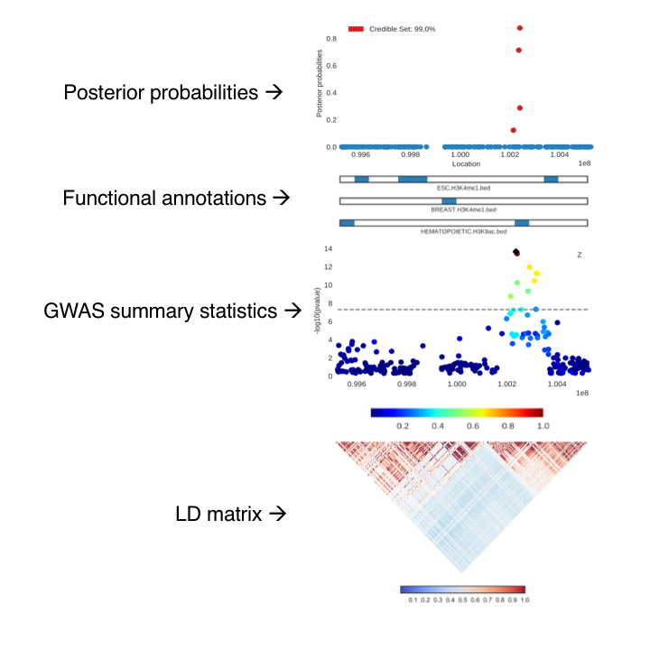
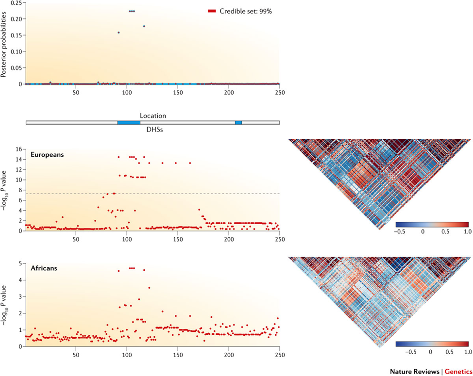

Visualizing fine-mapping studies with CANVIS
One of the first projects I worked on was a fine-mapping visualization tool called CANVIS (Correlation ANnotation Visualization). The motivation behind CANVIS is to address the current patchwork-like method of visualizing a fine-mapping locus.
Recent fine-mapping methods such as PAINTOR (Kichaev et al. 2014) make use of summary statistics, LD, and functional annotations to compute posterior probabilities of a SNP to be causal. Although there is current software to visualize a locus, the underlying LD structure, and the resulting posterior probabilities, it still remains a hassle to string all of these individual images together to create one figure.
CANVIS is a command line tool that generates publication-ready figures within ~30-60 seconds and is great for providing a visual summary of an integrative fine-mapping experiment.
So far, I’ve found myself to be my #1 customer of the tool—I figured writing a bit about it would be a great way to encourage others to use the tool as well as get some user feedback.
About CANVIS
CANVIS is written all in Python, and runs on the command line. It takes the following files listed below. The output is an SVG file with plots of the input data. The most basic image is just plotting the p-values given from a GWAS, producing only the GWAS locus plot. (This can be great for quickly visualizing a region without taking it off the cluster.) Users can easily add LD, annotations, multiple annotations, even multiple LD matrices! For example, if a study has multiple traits, then you can plot two GWAS locus plots. And one major advantage of plotting multiple LD matrices is being able to visualize studies that leverage information from multiple populations.
Input:
- Posterior probabilities of each SNP to be causal (computed from a fine-mapping method)
- Tracks of functional annotations
- P-values/z-scores for a region from GWAS
- LD matrix for a region
Output:
A few details to highlight are in the plot of the GWAS locus. The SNP with the highest computed posterior probability is denoted with a black marker. Then the pairwise correlations with this SNP and the others in the region are shaded accordingly. Additionally, in the posterior probability plot, the SNPs that fall into the credible set (the top markers which account for a certain probability of capturing all causal variants) are labeled in red; CANVIS calculates the credible set for a given locus and cutoff percentage.

Here is an image generated with CANVIS used in a review article by Pasaniuc & Price. The figure shows a sample locus with simulated fine-mapping data from European and African populations.
How it works
Matplotlib is amazing, but on its own there are a few hurdles. The posterior probability and GWAS plots are the standard scatterplots from matplotlib. The annotation bars are actually colorbars also created from matplotlib. Then the correlation matrix is created using the seaborn library (I’ve yet to find a better Python library that can produce more beautiful correlation matrices).
The major issue was that using the ‘plt.subplot’ function wasn’t enough to combine all of the different types of plots we wanted. To address the challenge, we had to get pretty creative. Each individual plot is saved as an SVG file, then using the svgutils library, CANVIS manually rearranges all of the plots into one larger SVG file. The additional benefit of returning an SVG file is that since it's a vector file, the image has very high resolution and can easily be converted to a variety of other file types.
Availability
CANVIS is packaged with the latest release of PAINTOR. (get it? PAINTOR and CANVIS…I’m still very impressed with the pairing of these acronyms) It can be downloaded off of Github with an accompanying wiki. Additionally, there’s sample data and a script to quickly produce an example figure!
Hopefully this tool will be useful; I know I’ve found it very convenient during my own write-ups. If anyone has any suggestions on how to make the tool easier or additional features, feel free to email me. And if you encounter a bug, make sure to flag it as an Issue on Github, and I’ll get to it as soon as possible.
Questions, Comments, Concerns? Feel free to reach out at ruthjohnson at ucla dot edu